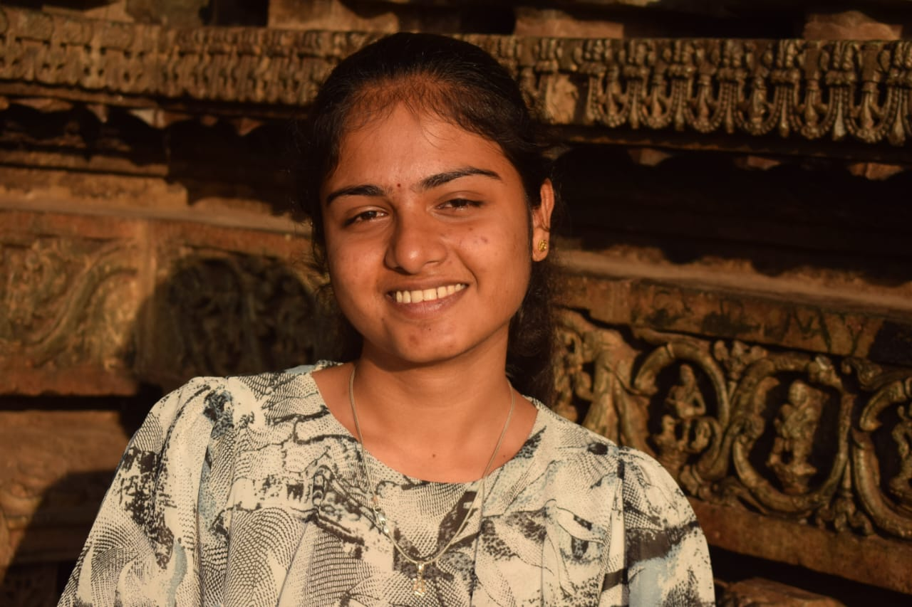

PREETI SANGAMESH KATARAKI
632, SLN Classic Ladies PG,
1st main, AECS Layout,
Bangalore, Karnataka - 560037
Email: preka22cs@cmrit.ac.in
Mobile: +91 7204857783

Career Objective
Determined and hardworking person looking for a challenging job within a rapidly growing organization where I can ...
Education Qualification
| Qualification | Institution | Year | Score |
|---|---|---|---|
| Bachelor of Engineering – Computer Science and Engineering | CMR Institute of Technology, Bengaluru | 2026 (Pursuing) | 8.16 CGPA |
| Pre-University Course – Science | Thungala Science Composite PU College, Jamakhandi | 2022 | 93.84% |
| SSLC | Bapuji International School, Badagandi | 2020 | 80% |
Technical Skills
- Programming Languages: Basic knowledge in C Programming, C++, Python, R and Java
- Database: MySQL (basic)
Projects
- Movie Success Prediction using ML: Developed a system to predict the success of upcoming movies using machine learning techniques in Python. Tools used: Python, Excel.
- Hospital Management System: Built a platform for storing and maintaining hospital records with interfaces for patients, doctors, and admins. Tools used: HTML, CSS, PHP, MySQL Server.
- Smart Attendance using Face Recognition: Demonstrated ability to create scalable, user-friendly, and efficient automated attendance solutions. Tools used: Python, OpenCV, Haar Cascade Classifier, Face Recognition API.
Achievements & Activities
- KABADDI women team Captain, CMRIT
- selected for the VTU blue team of Ball Badmition women team in 2024
- Gold medalist in Kabaddi at the district level
- National-level player for CBSE cluster
Co-Curricular Activities & Extra-Curricular Activities
Co-Curricular Activities
Seminars:
- Attended “5th Guru Kalam Memorial Lecture & IIF Award Ceremony” on 6th November 2021 at Seasons Hall, Royal Orchid Hotel, Old Airport Road, Bengaluru.
- Attended a seminar on the topic “Problem Solving & Ideation” on 20th November 2021, CMRIT.
Certifications:
- Data structures and Algorithms (Infosys Springboard).
- Introduction to Artificial Intelligence (Infosys Springboard).
Extra-Curricular Activities
- Organized RIC,24 from IEEE of CMRIT.
- Participated in project exhibition of CMRIT
- Blood Donation Camp organized by Rotaract club of CMRIT.
Personal Details
Date of Birth: 10/07/2003
Gender: Female
Nationality: Indian
Marital Status: Single
Permanent Address: Alagundi B. K, tq: Mudhol, dist: Bagalkot
Languages Known: Kannada, English, Hindi
Hobbies: Athletics, Outdoor games